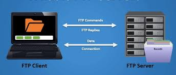
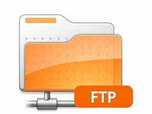

O firewall é um dispositivo de uma rede de computadores que tem por objetivo aplicar uma política de segurança a um determinado ponto da rede.
 O FTP (file transfer protocol – protocolo de transferência de arquivos) é uma forma rápida e simples de transferência de arquivos na internet. Pode representar tanto o computador que transfere o arquivo quanto o servidor FTP.